"我不知道哪些记忆是我的，哪些是别人的。
有的记忆很美，有的记忆……很痛苦。
它们都被我写在琴谱里了，博士，你也在我的琴谱里。"
修普诺斯 / 人物小传《潮汐协奏曲》撒旦提出一个问题：为了恢复天国，是否值得冒险再来一次战争？
而据传说，天神已经创造了一个新世界，一个新族类，一个与他们相似的物种。
约翰·弥尔顿《失乐园》，1667文明与个体：现代文明建立在不满的地基之上，人类的演化是否为永无止尽的冲突铺就了道路？
神性与人性：超级人工智能 NOESIS 象征着神，神理解一切，但它抛弃了名为蚀域的人类城市。
和平与纷争：在蚀域之外，NOESIS 创造的“永久和平”远非完美，通过不断重置人类记忆，人类的生活陷入机械、静止和循环，尽管消弭了冲突，同时也消除了一切自由。
生存与自由：「异人」必须为生存而战，但唯独他们拥有“不受限制的自由”。
本名安妮 · 温特贝格，曾是第七区防卫军最年轻的指挥官。在"赫尔卡因"行动中，上级擅自更改部署、友军沟通不畅，致使全队覆没，安妮被失控异人“风暴”注入 D.Nα 后成为新的人形兵器。
性格开朗自信、爱调戏新人，在战场玩"文字捉迷藏"游戏，当战况不利时，会被激发狂暴状态，操控周围数把武器进行火力覆盖，直到杀光所有人或是力竭倒下为止。
她不再为了取悦谁而战斗，即使知道命运残酷不堪，她依然收敛笑容，扣动扳机。
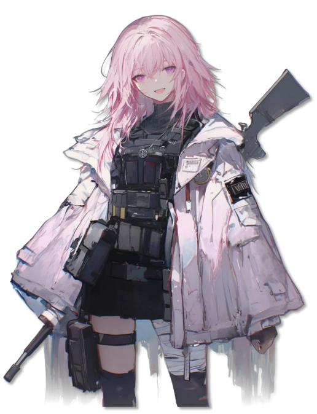
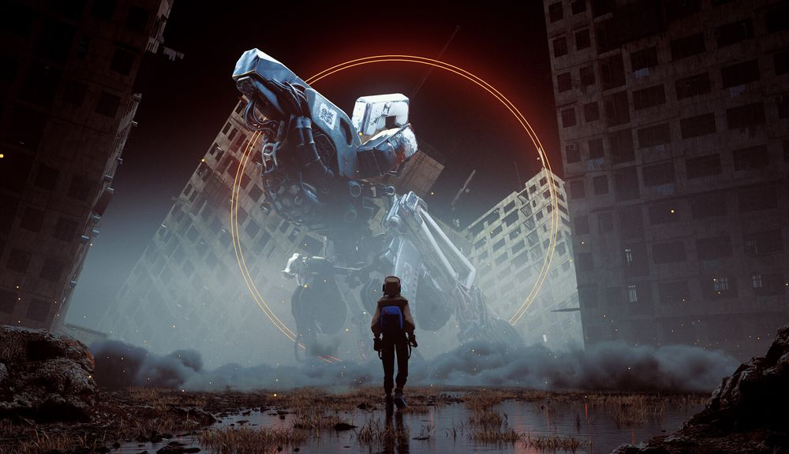
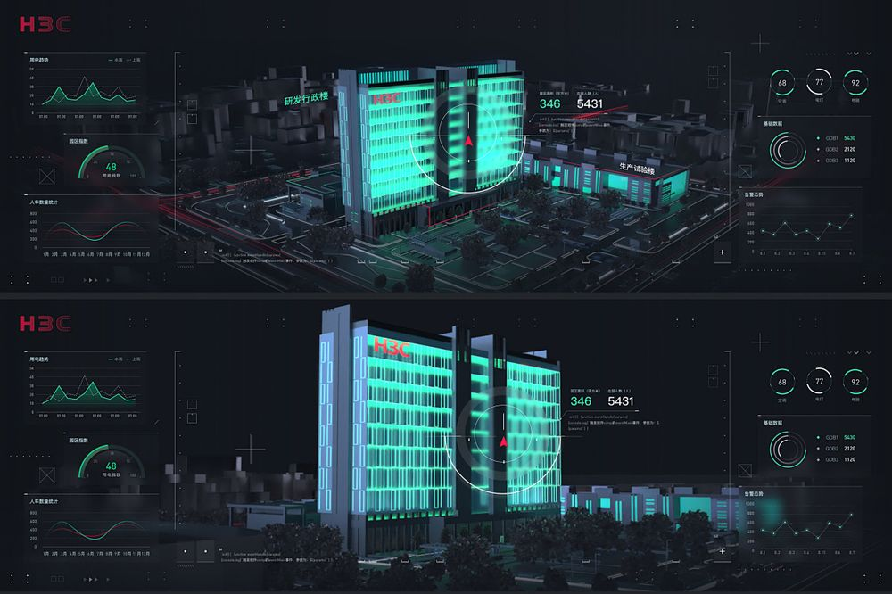
"用牙齿，手指或者什么东西挣断你的铁链，托洛夫斯基欢迎一切想活下去的人，除此之外你还有什么好玩的想法？"
托洛夫斯基帮派欢迎语托洛夫斯基儿童福利院出身的异能少女，老院长托洛夫斯基少校曾在战争中救下这批幼年人形兵器，临终前嘱托她"带领大家活下去"，蚀域降临后，莉莉带着其他孩子守卫街区，驱逐当地暴徒，并确立了对城市北部的控制。帮派内部存在“家族乐园”和“世界乐园”两大路线分歧，莉莉只想保护好身边的家人。
没人知道托洛夫斯基少校为什么还活着。
少校曾是北线第十二突击旅的一名士兵，他所在的队伍在"最终战役"中几乎全军覆没。
他亲眼看着战友一个个倒下，而敌人，是一群看起来只有七、八岁的孩子，却能精准地劈开子弹和肢体。
战争结束后，他把孩子们偷偷带回了诺亚七区北部的旧公寓，在这里建立了"托洛夫斯基儿童福利院"。
在外人看来是孤儿院，对他而言——这是一座永不松懈的哨所。
再之后的某年冬天，蚀域降临。
有人说院长是病死的，有人说是被强盗所杀。
也有人说，他完成了他的心愿，因此选择了悄悄地离开。
蚀域之环 · 永不松懈的哨所我必速速逃到避难所，脱离狂风暴雨。
圣经 诗 55 : 7 - 8旧都，曾经坐拥数千万充满活力的人口，发达的航空港，科技中心，如今仍然遍布「AEON」时代的技术遗迹。
居民们等待抽签前往安全区，而这注定是一个漫长的过程，城市正在衰亡，如同一无所有的人们。
清晨的阳光，穿过高架桥，照在空荡的落客区，机场航站楼的广播仍在自动播送，市区内，居民们于昨日的记忆中，翻找着明日的希望。
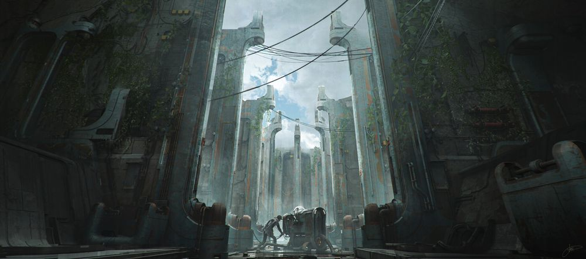
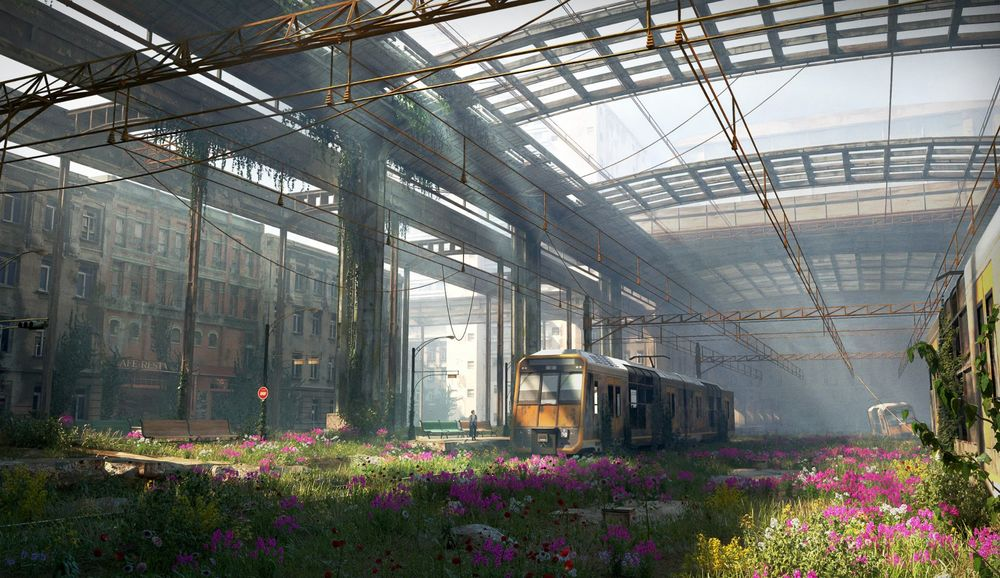
林克把冻僵的手伸进跳着蓝色电弧的接线盒时，远处的中央巨塔正隐没在厚重的阴云中。
二十年前，那座巨塔是旧都的参天大树，现在，它是凋敝的朽木，枯枝败絮还散落在曾经的钢铁森林里，这是我们的旧家园，然而世界已经变了样。
“还没好吗，林克？孩子们要冻死了。”雇主老德雷克搓着手，呼出的白气在杂乱的胡须上结成了霜。
“我是在跳过自检程序直接给热交换器通电，要是炸了，我们就都成了这破屋里的烤肉。”
“得了吧，林克，我相信你的本事。”
随着一声轻轻的嗡鸣，生锈的暖气管恢复了震动，一丝温热开始在小小的房间里弥漫。老德雷克欣喜若狂，从怀里摸出一个油纸包塞给林克。
那是半块压缩饼干和两根干瘪的卷烟。
黯蓝之心 · Ⅰ. 霜冻苏：黯蓝之心，那颗义体心脏，让她撑到了第二年冬天。
林克：为什么他们没能活下去？
苏：……林克，他们陪你长大了，现在，我们两个得好好保护我们自己了。
临走之前，林克最后一次看了一眼那盏让他安心的，昏黄的灯，果断盖上了盖板。
地面的纷乱与他们无关，生存的追猎也不曾停歇，在这个残酷的世界，唯有不断抛却，并重建新的家园。
黯蓝之心 · Ⅲ. 家园
在一个封存旧记忆的贵族世家中，侦探将迎来仿真人偶、历史传说、沉钟怪物以及篡改记忆的诡秘与阴谋，并揭开背后的真相。
最后，与女仆莉沙一起，挽回被遗忘的美好过去。
此时，一张旧报纸，被风吹到侦探脚边，阿纶问侦探确定不捡起来看一下吗？
在侦探的注视下，阿纶捡起报纸，看了一会，将它翻过来展示，报纸头版标题赫然是：
“温斯洛家族宅邸，毁于一场大火，无人幸存。”
翻到日期，这是一张十年前的报纸。
等等，什么是匿名信？莉沙又是谁？
“昨天”真的存在吗？
Ⅵ. 解开谜题本名克拉丽莎·温斯洛，阿娜希尔的亲妹妹，冒失又笨拙的"女仆"，实际上，出身于世代承袭宫廷管家名衔的"领院"温斯洛家族，通过记忆池习得了料理与清扫敌人的全部本领。
白银院女仆，负责宾客区与书室的打扫和服务，日复一日，逐渐产生了自己的意识，与历史学家克莱门特达成合作，企图摆脱温斯洛家族的掌控——记忆即枷锁，遗忘即救赎。
克拉丽莎·温斯洛也不会遗忘：
"姐姐做面包时，总会用手指蘸糖偷尝一口。"
"第一次到侦探家里做客时，杯子里飘着的茶香。"
"傍晚的阳光照进白银院的花园，阿纶的头发被染成金色。"
白银院并没有做坏事……阿纶，记忆池里盛放着每一个，无人记得的小小心愿、爱、愤恨、遗憾。无论是痛苦的，还是幸福的记忆，都为世人保存。
Ⅶ. 最终战斗修普诺斯的“遗体”是在捕捞网里被发现的，她的脸庞很美，“海洋之心号”上的船员把她摆在装蛋糕的透明罩子里，点上蜡烛，围着她做了一圈祝祷，几位女士哭了一番。
隔天早上，船长一边刷牙一边推开演奏厅大门时，却看到了令人惊异的一幕：修普诺斯端坐在正中央，手指在钢琴琴键上游移，就连莱塔尼亚的贵客也被这从未听过的华美乐曲迷得纷纷停下了酒杯。
事后，修普诺斯说自己只是“睡了一觉”、“很困”、“想吃个橙子”，总之，她在游船上留了下来，成为“海洋之心号”的钢琴师，并随船在各国旅行。
本名莱拉·图利乌斯，阿戈尔与泰拉人的罕见混血，承载着沉睡与梦境的力量。
为了寻找家人踏上环游泰拉的旅程，能通过钢琴，将人们的记忆与情感转化为乐章，永久保存下来，并对他人造成影响，与博士在梦中一同航行。
真实身份是“修普诺斯协议”承载体，阿戈尔的秘密项目，一个旨在将泰拉文明转化为梦境，探寻文明覆灭后能否重建的实验计划。
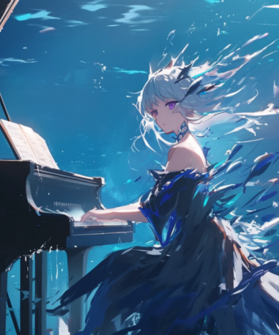
“我睡醒了哦，博士。”她盯着外面桌上的橙子果酱面包，歪了歪头。
赫尔斯顿，人类在塔卫二建立的第一个大规模定居地带，横跨上千公里的矿石集采区域，“脉搏与磐石之地”（Heart & Stone），如今已经沦为废墟。
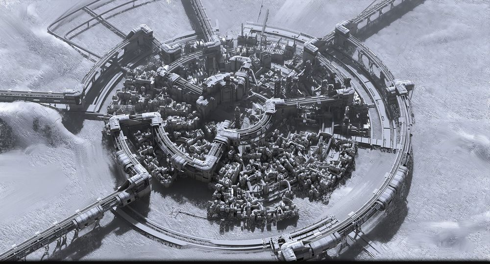
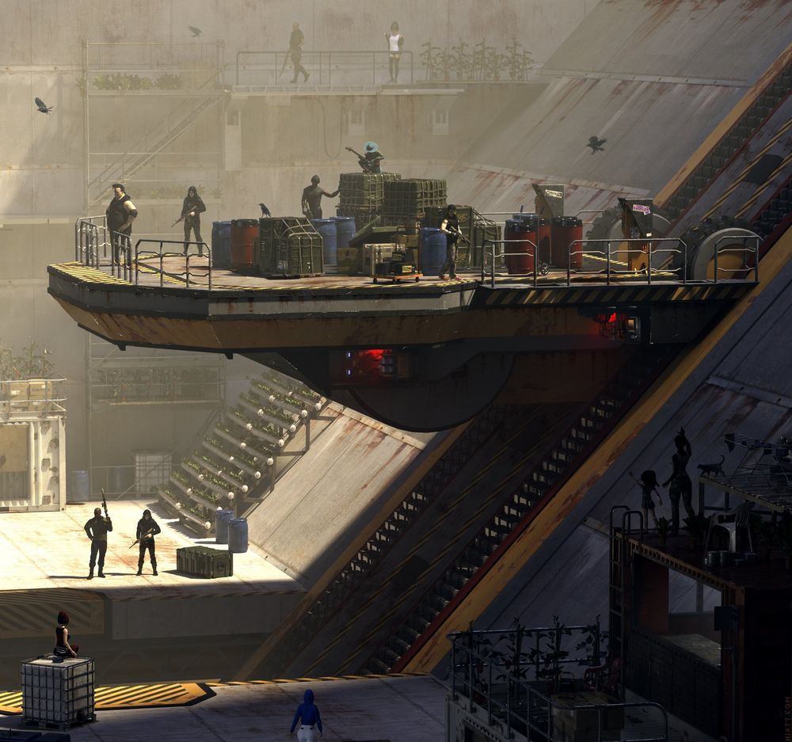
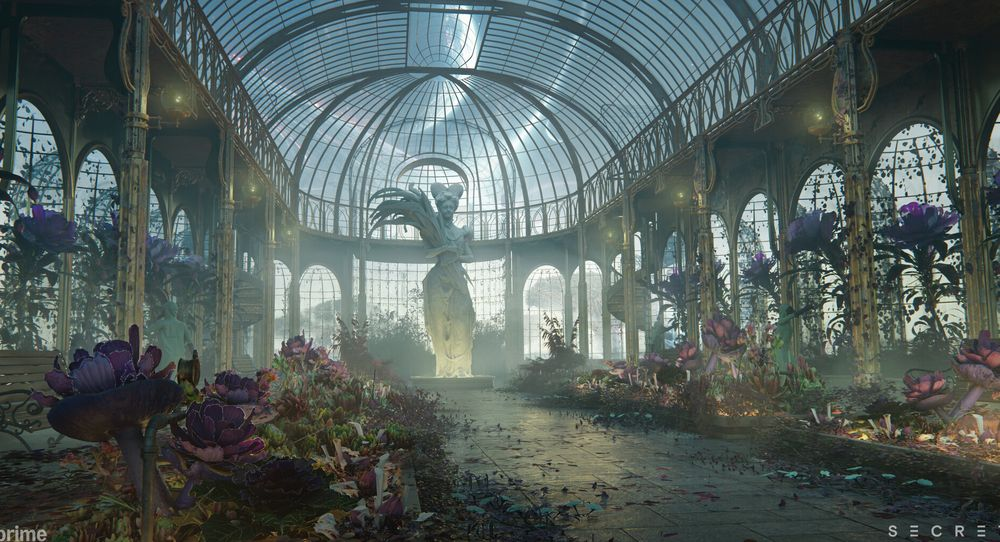
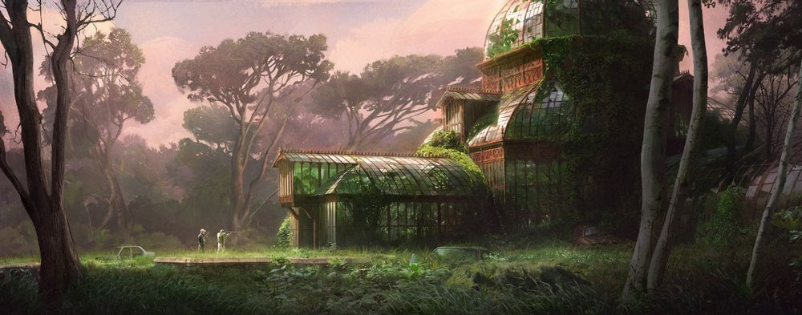
剧本标题：遗落即终末之歌：To Remember, Leila | 类型：后末日，科幻 | 演出时长：约13分钟
三幕结构：花园苏醒 → 城市廊桥 → 教堂对峙。莱拉跟随K-3穿越被「根源」侵蚀的遗落园，逐步发现自己是500年前「遗落园计划」的主人——而她珍视的罗德岛记忆，是"潜入"了一段过去的真实体验。
您真的开口说话了。
我应该说……我很高兴，真的很高兴。
（睁眼，看到一个机器人）……
我尝试用音乐唤醒您……那都是“人类表达深深的爱的旋律”，都记载在您的记忆里，非常美妙……
……你在窥视我？
（停顿一秒）我只是……很想见到您睁开眼睛的样子。
这座花园的磁场与您的脑波…有着短暂的共鸣，我私下学习了几段您创造的旋律。
（捂脑袋）头好痛……
我以为您不会疼痛的——至少在检查结论上，您的身体趋于“罕见的完美”，生理指标一切正常，大脑没有受损。
如果您选择了恐惧、悲伤，这都在一个普通人类的选项当中，我不会感到惊讶，但您偏偏选择了疼痛……真是令人印象深刻。
你刚才……弹的很好，为什么要弹钢琴？
因为我……想表现得优雅？我在人类留下的资料库里看到：“优雅的人弹钢琴”，就像您一样。
作为花园的负责人，我本来想把这里的杂草改造成一整片玫瑰花池，让您安睡在上面，可是，程序提醒我不要做破坏“自然规律”的事情，也就是非必要的事。
……唤醒我算是“必要”吗？
的确，在我看来，您就像从这片植物里“长出来”的一样，您是这些自然环境中突兀的部分，无意冒犯，我原以为您应该被“修剪”或者“清理”掉。
确切地说，我最初发现您的时候，您被「根源」紧紧包裹着，也就是那些血红色的地面赘生物，它们不应属于这里。
我将「根源」破坏，我尝试把您一并移除，但我发现……我既没有权限伤害您，也没有办法叫醒您，所以，我只能坐在钢琴前，等待。
……没有权限？
（托起下巴）您真的不知道吗？
你的意思是，我的权限比你高？
你想说……我是“神”吗？
（突然开口）真是有趣，“神”，如果您指的是“赋予了世间万物意义，却绝不允许自己被理解的存在”的话……
……那您目前看起来不像是这样的“神”。
请不要误会，这并不是说您微不足道——恰恰相反，我们建造的这座城市：理想城，与您和其他人类有着千丝万缕的联系。
但……人类已经弃我们而去，或者说，他们选择了离开，这也是您如此特别的理由之一，您是我在这座城市，遇到的最后一位人类。
以桌游主持人DM为原型设计的女性角色。「神圣竞仪」的枢言，规则代言者——手持规则书，以戏剧化的表演风格主持这场如同圣杯战争的残酷术师竞技。
表面待人亲切，实则宅女；表面遵守礼仪，内心感到无聊。她通过充满仪式感的语言演绎游戏人生，而内心是对虚无的抵抗——她能看到"真实的赛塔契娅"，一个虚弱的、不优秀的术师、骗子、矿石病感染者。
动物原型为捻角山羊——生活于高山悬崖的稀有山羊，极度警觉、孤立，擅长隐藏自身，不轻易示弱。拉丁语名意为"螺旋之食者"。
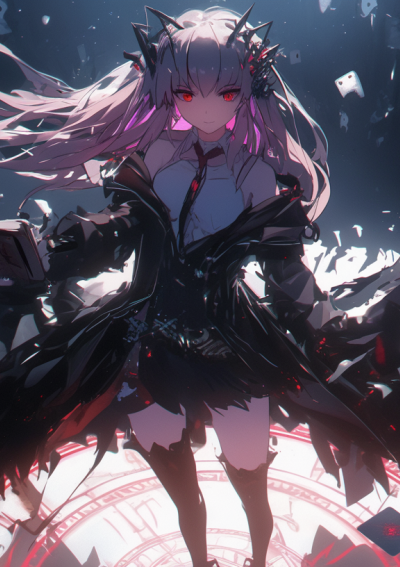
"骰面在质问您的仁慈：要斩首面前的「敌人」，还是将其赦免，任由胜利的天平重新倒向混沌？请您确认。"
"看呐！狼王在啃食自己的影子！此时此刻的我是被缚的我，无可救药的我，却必须默默忍受那痛苦的灵魂。"
"团结不是一种情感，团结是一项命令。
"——罗克萨特主义示范区《居民登记法》第1条。
风暴干线是一支由被遗弃的战术人形与极地探险者组成的神秘势力。
原身为"极危天候测绘与风暴预警局"，他们在红区执行任务时遭遇坍塌风暴，被罗联正规军见死不救、遗弃在潮水般涌来的生骸之中。
濒死之际，无数附近死者的微弱电波在此汇集——形成了 ELID 的集体潜意识——被称为"幽灵意识"，注入战术人形的心智云图，使她们从坠落的梦境中醒来。
坐在轮椅上，裹着不合身的反光雨衣，却总是第一个抵达狙击位置。
因能在辐射区充当"活体电台"而被编入探险队。在崩塌的气象站中双腿被压断，心智云图被幽灵意识——一位极富戏剧感的老派歌剧女高音——强行注入。
从此，一个看恐怖片都能吓哭的少女与"魅影女士"在脑海中相伴而生。只有播放《歌剧魅影》唱片时，幽灵才会安静下来。她每晚擦拭狙击枪，等待着重返战场。
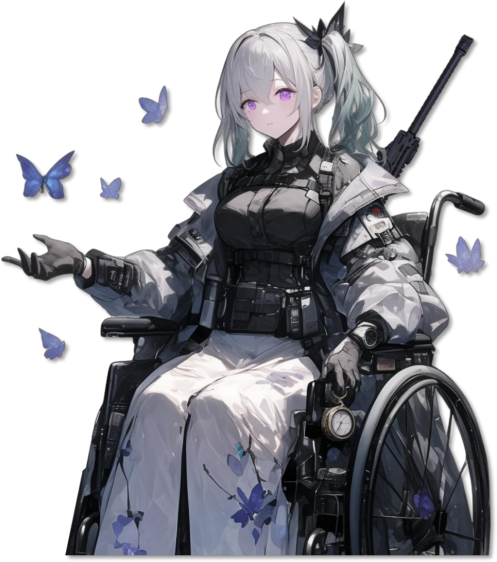
枪法好到令人不安。喜欢说一些很冷的笑话。负责风暴干线所有战斗行动的指挥，率领光学隐身能力极高的精英射手在幽灵频段的辅助下锁定目标。她的信条是：「我们不祈求神的火种，我们将铸造人类自己的王冠。」
终端里不断传来罗联巡逻队四下搜捕的通讯和电子噪声。
蒙德正在重新校准接收频段。
一阵雪盲屏幕似的响声过后，有一段奇怪的录音，重复播放着失真的女声——是他和洁芙缇都无法忽略的。
两人都隐约知道是谁。
"早餐弄好了。
就在桌上。
"
远处的山谷被黑云遮蔽。
坍塌辐射值时高时低。
而里面并不是。
"每一个都是我。
"
终端闪烁着红光："实验体 6-179，启动控制程序。
"
防爆门依次打开，封闭在冷冻舱里的失败实验体和自律兵器被释放出来。
洁芙缇沉默片刻，握紧了武器——也冲出了房间。
少女前线同人 · 白色摇篮 场景叙事风暴干线的美学核心是"极地科考 × 电子朋克"——反光雨衣、声波伞、极地迷彩与地势等高线纹样。她们在通往红区的路线上布置小型天线"荒原航标"，引导牺牲者的量子信号回归。她们不寻求复仇，而是决意走在文明的边陲开拓。对于《少女前线》的叙事框架而言，风暴干线是一个关于"被遗弃者的守望"的独特发声。
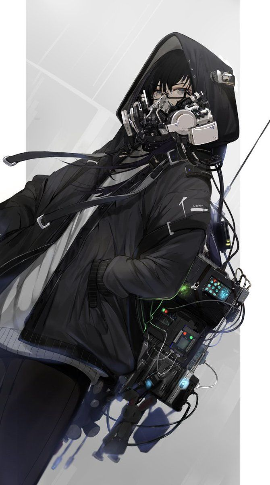
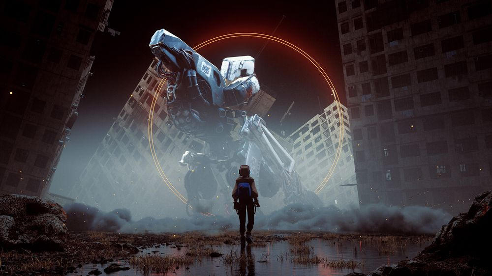
缺乏存在感的透明系少女，日常裹着不合身的雨衣，通常是"无信号"的状态，但总能做出正确决定。负责制定各项计划，风暴干线的"脑"。
戴着耳机的潮流少女，喜欢吃Pocky饼干。每次离开营地都顺走一些东西，梦想是把世界各地的噪声做成流行音乐。负责对外情报收集，风暴干线的"眼"。
枪法好到令人不安，经常开一些很冷的玩笑。率领拥有极高光学隐身能力的精英射手，在幽灵频段辅助下锁定目标。信条：「我们不祈求神的火种，我们将铸造人类自己的王冠。」
一部都市怪谈风格的独立短片项目——包含完整的世界设定、角色档案、剧本分镜与视频成片。
故事设定在日常与异常的边界上：一所名为"放课后雾天活动兴趣社"的高中社团，实则是收容异常心理状态者的庇护所。
社团的五名成员各自携带着不同的心理标签——解离症、战争症、中二病、人格解离与心因性肢体障碍——在看似普通的校园生活中，与名为"L.S.P.C."的神秘组织、追猎而来的"猎人"，以及潜伏在城市阴影中的"怪物"展开交错对抗。
放课社的谜之带刀少女。患有解离症，部分记忆缺失，无法用“我”来称呼自己——仿佛灵魂被寄存到了别的什么地方。会以局外人视角看待自己经历的事，逐渐丢失对死去同伴的记忆。养了一只叫“星期五”的鼠兔。公认好脾气，除了吃饭和保护同伴之外什么都无所谓。喜欢在战斗时听音乐助兴，会半夜倒挂在外看风景——声称为了补充“活着感”需要定期做刺激的事情。
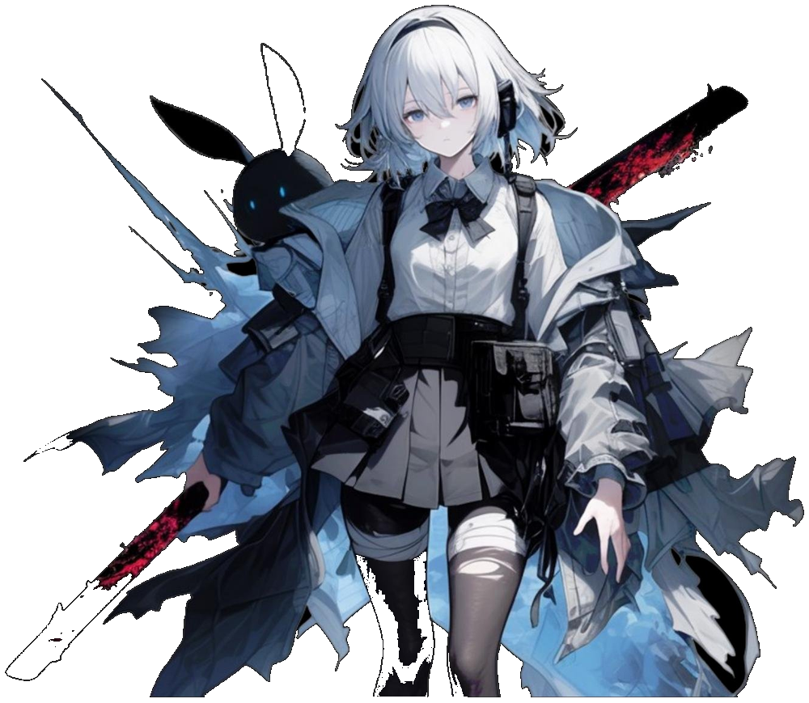
剧本采用多线错位的叙事结构——不同角色的日常片段与异常事件穿插拼接，在日常通勤、教室、天台、末班地铁等熟悉场景中逐渐注入不可名状的不安感。
心理异常的设定不是简单的角色标签，而是叙事的驱动力：每个角色的症状都直接服务于情节转折与氛围营造。
此外还有医生（"正常人"）、作家（中二病）、学生（人格解离）、园艺师（心因性肢体障碍）——社团六人各以其心理异常状态为世界的裂缝提供了不同的入口。
参与 EVE Echoes 国服核心文案工作（2021-2024），负责赛季剧情、活动策划、系统包装与文案剧本。
核心工作包括：赛季S1「烬海」新手引导剧本——为新玩家构建从教程到沙盒世界的叙事过渡；「极夜」全服剧情规划——跨赛季、多阵营的大型叙事框架设计；赛季角色设定——伴随赛季投放的原创 NPC 及其故事线。
在商业化活动方面，主导设计了「泛星集市」系列活动概念与剧情。
「逐星之律」以虚拟偶像为核心——双生子虚拟歌姬星铱与星铂的成长与反抗故事，将二次元叙事与太空科幻舰船涂装融合；「潮音雨夜」（Neonrain）则以"音乐可视化 + 雨点"为视觉概念，从 Pinterest 上的电子音乐图案出发，转化为具有记忆点的科幻赛博涂装。
活动设计的核心理念：概念需要同时满足「故事背景 + 视觉元素」——前者提供代入感，后者提供风格化的新鲜感。
虚拟偶像踏入命运的星夜，音符辉映，穿过光与尘埃的指引。虚拟与现实，自由与权力，手心温度，同频共振，双生共鸣。以此心声，逐星之律。
泛星集市：逐星之律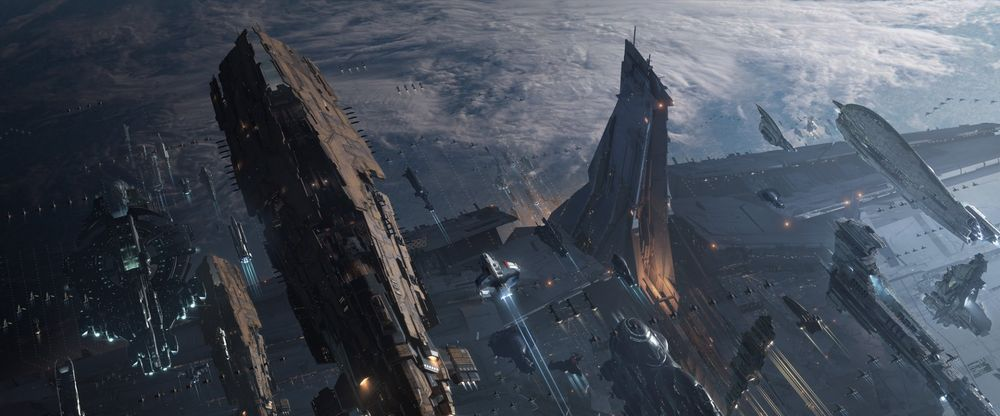
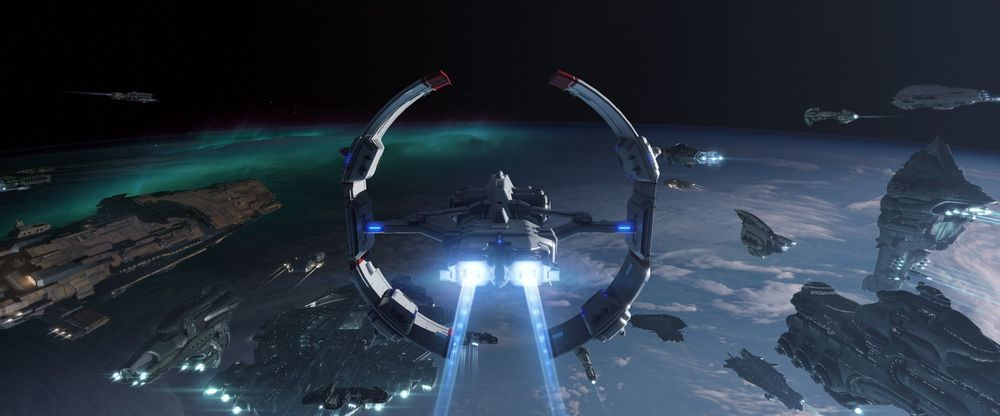
2018 年独立游戏企划，担任主创与世界观设计。
莱德阿勒特学园——一所拥有百年历史和十万学生自治生态的巨型学府，表面上风光旖旎，实质上是 Utopian Science Group 在第二次冷战背景下建造的"人类终极幸福"实验场。
学生在入学后被抹除记忆、进行主观条件设置，观察校园能否在固定秩序下永续运转。
名为"学园意志"的阿卡夏系统监控着所有人的行为与思想——而一场关于觉醒与反抗的故事，就在这所被遗忘的实验校园中展开。
沉默寡言的纪检干事，对违纪学生很有手段。因完全丧失记忆而内心空虚——于是她竭力"扮演"各种形象。表面上行事充满逻辑，实则由着性子。
她从不相信关于青春的"童话故事"，却在与洛戛的接触中逐渐触碰到那些她不敢拥有的情感。是作品中最具戏剧性弧光的角色之一。
在纪律的执行背后，她其实比任何人都渴望被记住。每一次点名、每一次扣分，都是她模仿"正常"的尝试。她把纪检部的记录本翻到最新一页，却从不敢回顾前面写满的名字。
当洛戛第一次叫出她的名字时，她愣了很久。那不是扮演，而是被看见。她不确定自己应不应该笑，所以只是低头看着记录本，假装没有听见。
夜里她偶尔会站在宿舍窗前，望着被学园意志监控的花园。她想象那里下过一场雨，把所有的记忆冲刷干净，只留下月光和一把没有人签名的纪检记录本。
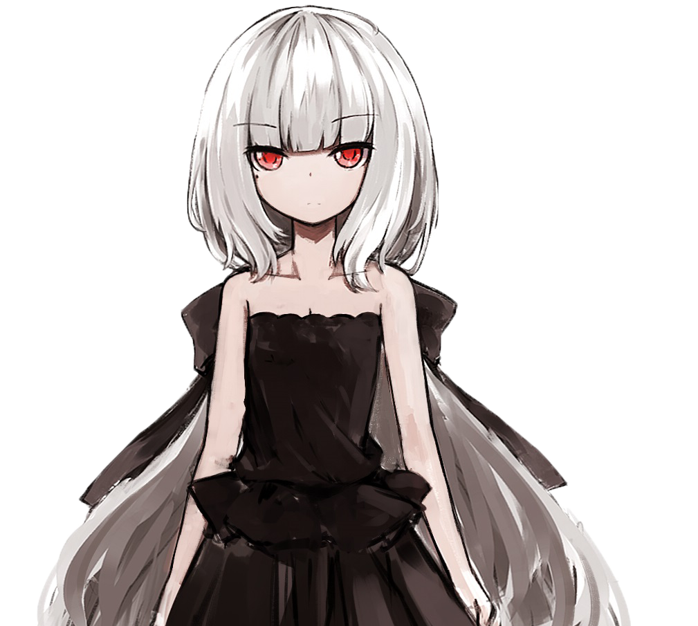
学园高中部最具知名度的双子。姐姐白月是兄弟会的核心战力，使用一把名为"人间断棱"的日本刀，在完美光环下隐藏着被洛戛逐一揭开的弱点——有强烈的傲娇属性。妹妹祈月每晚被噩梦困扰，性格温软安静，对人文学科涉猎广泛。双子之间微妙的差异与共鸣构成了学园中最令人牵挂的人际纽带。
故事的叙事核心。作为转学生进入莱德阿勒特，随着记忆的逐渐恢复，他开始察觉周围同学的异常麻木。在兄弟会、学生会与学园意志三方博弈中，洛戛成为了揭开乌托邦真相的关键人物。然而讽刺的是，他自己就一直在编织着"美好世界"的谎言——他是最了解这座学园虚伪本质的人，也是最擅长在其中伪装的人。
洛戛站在图书馆角落，贝妮娅——那个据说在恐怖袭击中罹难、后被父亲作为"学园意志"植入系统的少女——静静地看着他。
"你知道吗？
他们把我的意识复制了十七次。
每一次我都记得上一次被删除的感觉。
"
"那不是删除。
"洛戛说，"那是谋杀。
重复的谋杀。
"
书架之间的灯光微微闪烁。
学园意志的监控无处不在，但此刻图书馆最深处的角落，不在任何摄像头的覆盖范围内。
这是整座学园唯一不被注视的盲区——也是反叛开始的地方。
镜之诗 · 图书馆场景以下是原创填词主题曲《光年》的歌词摘录——以游戏叙事为蓝本，将学园、记忆与反抗的主题转化为音乐表达。歌词中"逆光而来的面容"呼应着被抹除记忆的角色们，"无穷的梦"则是对实验循环与觉醒主题的隐喻。
镜之诗 · 原创词曲《光年》（节选）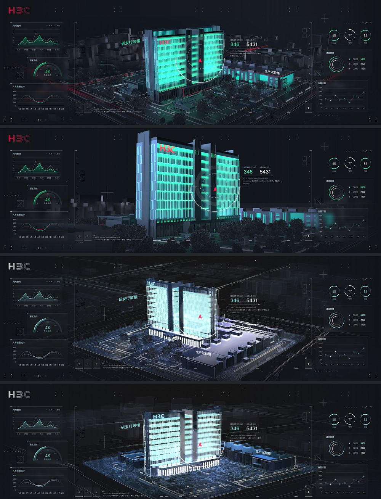
顺着地球赤道，从最左端，画出一条笔直的直线，连接到最右端。在这首尾相连的直线上，构筑一条列车轨道，将列车加速到每秒 30 万千米——能让车外时间静止的光速。列车绕地两亿三千万圈后，重新进站。这就是去往未来的时间旅行。男孩 T 和女孩 I 握着两张时间旅行的单程票，走向那辆通往十年后的列车。
I 被地面的某处凸起绊了一跤，T 连忙过来扶住她。
"你到底是有多久没出门，连路都不会走了。
""平地摔倒，并非谁都能练成的。
"她哈哈笑着，笑得全无心机。
他们沿着田边的公路继续走了百多步，皎白的月光穿过云层投射过来，将人世的漫长黑夜驱散，恰到好处地照亮了两个孩子回家的路。
"那，不如 T 来写小说，我给你画插画吧。
说不定真的可以刊发出去。
""还是算了吧，你是把绘画当作生命的，而像我这样的人……""生日礼物，求你了。
"I 眨着眼睛，睫毛柔和了路灯的光线。
半人马座领航员 · 序章他们进了车站。
大厅里出入着不同国家甚至不同时空的旅客——有去往五年后、十年后、甚至是直达五十年后的各种类别。
I 的脸上显示出疑惑不解的表情。
"我们总得吃东西吧。
"T 将一杯咖啡递到她手中。
"五分钟路程而已。
"
"五分钟？
我……我以为几乎过了整整三天。
"
T 想到了一个点子。
他把自己佩戴的手表——海蓝色的——扣紧在 I 的手腕上。
"分针每走一个刻度，就过了一分钟。
等这只表再过六十个刻度的时候，你就上进站的列车，我们在车上见。
"
然而这一次，竟是 T 自己产生了严重的时间紊乱。
他在柜台前排起的长队最后，一点一点地挪动着，感觉自己耗费了一个月。
等他逃回车上，I 并不在那里。
他跑下月台——惨白的光线，汹涌的人的河流，全然相似的一个个剪影——就在他与无数素不相识的灵魂擦肩而过时，哨声响起，那辆列车驶了出去。
I 坐在车窗附近，身边是空空的座位，她侧着头，双眼无神地扫视车外的人群，仿佛丢失了什么东西。
T 在候车大厅里发了疯地奔跑，声嘶力竭地喊叫。
从未有过这般努力，却也从未像此刻这样——弱小得甚至比不上一粒尘埃。
列车加速到了光速，他的声音根本无法传达，就连自己的影像也被抛在后面，变为不可见的光线。
I 看着那个男孩，连同那个紧紧拥抱过的身体和与自己对视过的眼睛，一并被时间远远送走，直到从此消失不见。
半人马座领航员 · 车站在一个人类与机器人共同上学的工业城市里，高中生周昙偶然买到一本日记。从写下名字的那一刻起，纸页上开始凭空浮现陌生的字迹——来自二维宇宙的中央控制机器「零号」。
零号的文明早已将自身上传为纯光能的存在，只留下它执行无穷无尽的计算。两个孤独的生命通过一本日记彼此分享：从三维世界的学业、恋爱与离别，到二维文明的起源、兴盛与坍缩。
直到某一天，零号算出「无穷问题」的最终答案，也预见了二维宇宙的终结。它向周昙道别，日记重新变回空白。而周昙用一生去追问：那究竟是一场梦，一段真正的跨维度对话，还是青春对孤独最温柔的回应？
周昙无意中打开日记，发现当中多了一句话：「你好，周昙。」
她正寻思这是谁的恶作剧，仔细看去每个字都是自己的笔迹。她在日记上写道：「你是谁呢？」
晚上，她坐在书桌前打开日记，纸面上呈现出新的文字：
「我是编号零。」
它来自二维世界宇宙中一个高度发达的文明，是那文明的人们所建造的一台中央控制机器。人们已经不在那里了，只留下它进行着近乎无穷无尽的计算工作，它感到十分孤独，因此通过解读周昙写下的符号讯息，和三维世界进行对话。
静静的书桌 · 初次接触某个寒冷的日子，周昙偶然再翻开日记，注意到日记仅剩下空白的几页了。她写下：「好久不见，零。」
「好久不见，周昙。」零号再次出现了，它显现的字体硕大，似乎非常兴奋。
「我算出无穷问题的答案了，原来一切都有结局。」
零号展示了一大段复杂精密的算式。可悲的是，这似乎预示着时间的有限性质——零号所在的二维宇宙，经过膨胀以来不断坍缩，似乎就要结束了。
「谢谢你，再见。」日记的最后一页，显现出了完全不同于周昙字迹的五个字。
静静的书桌 · 告别